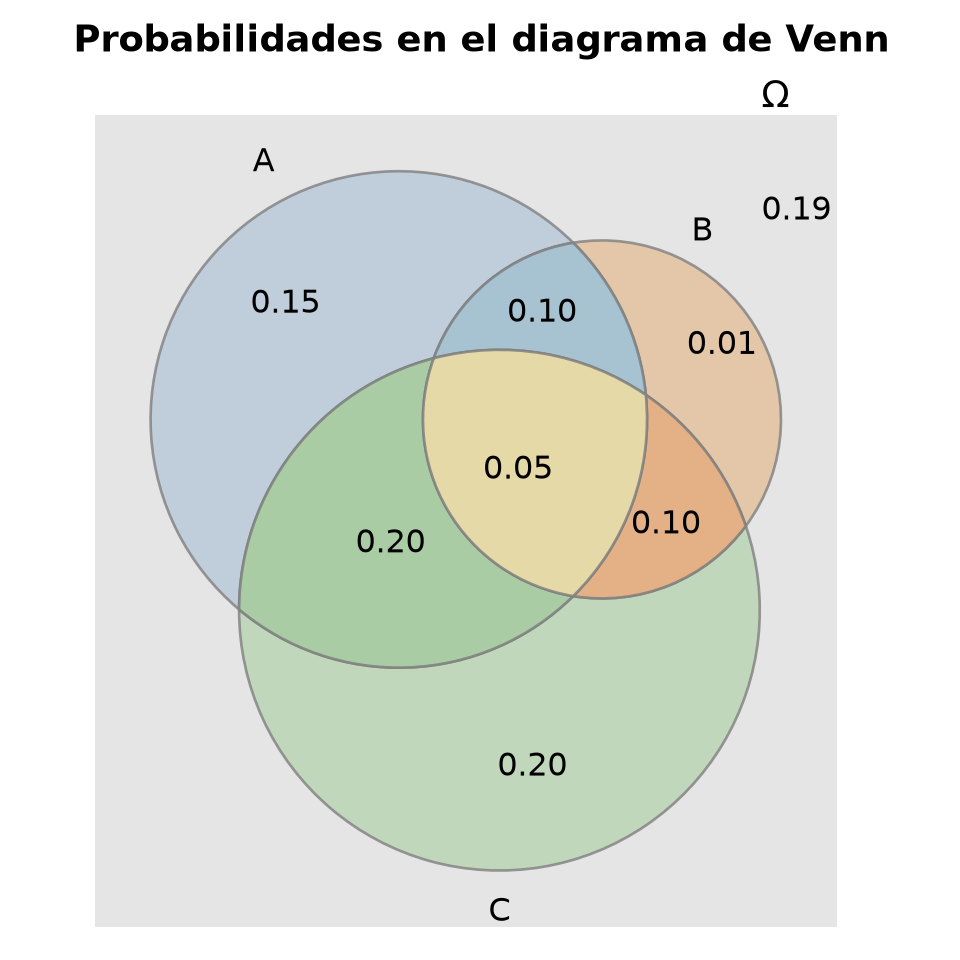
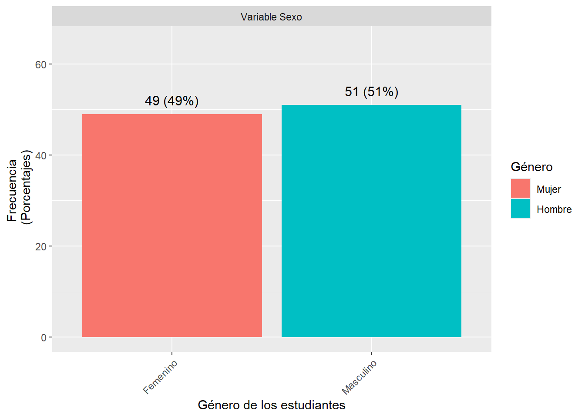

TEORÍA DE PROBABILIDAD (con R)
Introducción a la probabilidad

About these lecture notes. These notes present the foundations of probability theory, including sigma-algebras, measurable spaces, Kolmogorov’s axioms, and classical probability, with mathematical explanations and examples using R.
1 Introducción
1.0.1 Propósito
En este documento se introducen los fundamentos formales de la teoría de la probabilidad, adoptando una perspectiva rigurosa basada en la formulación axiomática de Kolmogorov. Los temas tratados incluyen:
La definición y propiedades de una σ-álgebra.
Los conjuntos de Borel.
Los axiomas de Kolmogorov.
La probabilidad Laplaciana como caso particular.
1.0.2 Pre-requisitos
Para comprender adecuadamente estos contenidos, es importante que el lector tenga claros algunos conceptos básicos, como:
Espacio muestral y eventos.
Teoría de conjuntos.
Técnicas fundamentales de conteo (principio de la multiplicación, permutaciones, combinaciones).
1.0.3 Material de ayuda
Estos aspectos introductorios se explican con mayor detalle en el siguiente recurso complementario:
2 \(\sigma\)-álgebra
Es importante resaltar que no todo subconjunto de un espacio muestral es un evento. Para que puedan ser catalogados así, dicho evento debe ser un elemento de un conjunto \(\mathcal{F}\) que tiene la estructura de \(\sigma\)-álgebra, concepto que se explicará a continuación.
2.0.1 Definición
Un sistema \(\mathcal{F}\) de subconjuntos de un conjunto \(\Omega \ne \emptyset\) se llama \(\sigma\)-álgebra (en \(\Omega\)) si posee las siguientes propiedades:
- \(\Omega \in \mathcal{F}\).
- Si \(A \in \mathcal{F}\), entonces \(\overline{A} \in \mathcal{F}\).
- Si \(A_1, A_2, \ldots \in \mathcal{F}\), entonces \(\bigcup\limits_{n=1}^\infty A_n \in \mathcal{F}\).
Comentarios.
La dupla \((\Omega, \mathcal{F})\) se llama espacio medible.
Los conjuntos de \(\mathcal{F}\) se llaman conjuntos medibles.
Los elementos de \(\mathcal{F}\) se llaman eventos.
Todo evento con un solo elemento se llama evento elemental.
Observación.
Obviamente, se cumple que \(\emptyset = \overline{\Omega} \in \mathcal{F}\). Además, si \(A_1, A_2, \ldots \in \mathcal{F}\), entonces
\[
\bigcap_{n=1}^{\infty} A_n = \overline{\bigcup_{n=1}^{\infty} \overline{A_n}} \in \mathcal{F}.
\]
Con \(A, B \in \mathcal{F}\), los siguientes conjuntos también están en \(\mathcal{F}\):
\(A \cap B\).
\(A \cup B\).
\(A \setminus B = A \cap \overline{B}\).
La diferencia simétrica \(A \triangle B := (A \setminus B) \cup (B \setminus A)\).
2.0.2 Ejemplo
Sea \(\Omega \ne \emptyset\) dado.
El conjunto potencia \(\mathcal{P}(\Omega) := \{A \subseteq \Omega\}\) es la \(\sigma\)-álgebra más grande en \(\Omega\). También se llama la \(\sigma\)-álgebra total.
Supongamos que \(\Omega\) es discreto y que una \(\sigma\)-álgebra \(\mathcal{F}\) en \(\Omega\) contiene a todos los subconjuntos unitarios. Entonces \(\mathcal{F}\) debe ser el conjunto potencia de \(\Omega\), ya que para cada \(A \subseteq \Omega\) se tiene:
\[ A = \bigcup_{\omega \in A} \{\omega\} \in \mathcal{F}. \]
- El conjunto \(\{\emptyset, \Omega\}\) es la \(\sigma\)-álgebra más pequeña en \(\Omega\). También es conocida como \(\sigma\)-álgebra trivial o vacía.
3 \(\sigma\)-álgebra generada
3.0.1 \(\sigma\)-álgebra intersección
Sea \(I \ne \emptyset\) cualquier conjunto de índices y \(\mathcal{F}_i\) una \(\sigma\)-álgebra en \(\Omega\) para cada \(i \in I\). Entonces:
\[ \bigcap_{i \in I} \mathcal{F}_i = \{ A \;|\; A \in \mathcal{F}_i \text{ para todo } i \in I \} \]
es también una \(\sigma\)-álgebra en \(\Omega\).
3.0.2 \(\sigma\)-álgebra más pequeña
Sea ahora \(\mathcal{E}\) cualquier sistema de subconjuntos de \(\Omega\) y \(\Sigma\) el sistema de todas las \(\sigma\)-álgebras \(\mathcal{F}\) en \(\Omega\) tales que \(\mathcal{E} \subseteq \mathcal{F}\). Entonces:
\[ \mathcal{F}(\mathcal{E}) := \bigcap_{\mathcal{F} \in \Sigma} \mathcal{F} \]
es la \(\sigma\)-álgebra más pequeña que contiene a \(\mathcal{E}\).
3.0.3 \(\sigma\)-álgebra generada
Sea \(\mathcal{E}\) un sistema de subconjuntos de un conjunto \(\Omega \ne \emptyset\). La \(\sigma\)-álgebra \(\mathcal{F}(\mathcal{E})\) se llama \(\sigma\)-álgebra generada por $. El sistema \(\mathcal{E}\) se llama generador de una \(\sigma\)-álgebra \(\mathcal{F}\) si \(\mathcal{F} = \mathcal{F}(\mathcal{E})\).
4 \(\sigma\)-álgebra de Borel
4.0.1 Borel en \(\mathbb{R}\)
La menor \(\sigma\)-álgebra sobre \(\mathbb{R}\) que contiene todos los intervalos de la forma \((-\infty, a]\) con \(a \in \mathbb{R}\) se llama \(\sigma\)-álgebra de Borel y se denota por \(\mathcal{B}\). Los elementos de \(\mathcal{B}\) se llaman conjuntos de Borel.
Propiedad
Dado que \(\mathcal{B}\) es una \(\sigma\)-álgebra, también contiene conjuntos como \((a, \infty)\), \((a, b]\), \((-\infty, a)\), \([a, \infty)\), \((a, b)\), \([a, b]\), \(\{a\}\), \(\mathbb{N}\), \(\mathbb{Q}\) y \(\overline{\mathbb{Q}}\), donde \(a, b \in \mathbb{R}\). Se deja como ejercicio verificar esto.
Comentario
Es importante recalcar que no todos los subconjuntos de \(\mathbb{R}\) son conjuntos borelianos.
Un ejemplo puede ser revisado en este link.
Explicación
Los conjuntos borelianos son aquellos que se pueden construir a partir de intervalos abiertos de 𝑅\(\mathbb{R}\) usando un número finito o numerable de operaciones de unión, intersección y complemento.
Esta colección es muy rica, pero no incluye todos los subconjuntos posibles de \(\mathbb{R}\).
De hecho, existen subconjuntos de \(\mathbb{R}\) que no son medibles, ni siquiera medibles de Lebesgue, y por supuesto no borelianos.
A continuación, se presenta la siguiente definición de σ-álgebra de Borel en \(\mathbb{R}^n\).
4.0.2 Borel en \(\mathbb{R}^n\)
Sean \(a = (a_1, \ldots, a_n)\) y \(b = (b_1, \ldots, b_n)\) en \(\mathbb{R}^n\), con \(a_i \leq b_i\) para todo \(i\). La \(\sigma\)-álgebra \(\mathcal{B}_n\) generada por todos los intervalos de la forma:
\[ (a,b] := \left\{ x = (x_1, \ldots, x_n) \;|\; a_i < x_i \leq b_i \text{ para todo } i = 1, \ldots, n \right\} \]
se llama \(\sigma\)-álgebra de Borel en \(\mathbb{R}^n\). Sus elementos son conjuntos de Borel en \(\mathbb{R}^n\).
5 Espacios de probabilidad
5.0.1 Definición
La tripleta \((\Omega, \mathcal{F}, P)\) se llama un espacio de probabilidad si:
\(\Omega \ne \emptyset\)
\(\mathcal{F}\) es una \(\sigma\)-álgebra sobre \(\Omega\)
\(P : \mathcal{F} \to \mathbb{R}\) es una medida de probabilidad (o simplemente probabilidad).
Es decir, \(P\) cumple los 3 axiomas de Kolmogorov:
\(P(A) \geq 0\), para todo \(A \in \mathcal{F}\).
\(P(\Omega) = 1\).
Para toda sucesión de eventos \(A_1, A_2, \dots \in \mathcal{F}\), disyuntos dos a dos, se cumple la llamada \(\sigma\)-aditividad:
\[ P\left( \bigcup_{n=1}^{\infty} A_n \right) = \sum_{n=1}^{\infty} P(A_n) \]
Un evento \(A\) con probabilidad 0 se llama evento nulo.
Comentario
La serie anterior converge porque el primer axioma asegura que \(P(A_n)\geq 0\) y el segundo, que \[P(\bigcup\limits_{n=1}^\infty A_n)\leq 1, \quad \text{ es decir,} \quad \sum\limits_{n=1}^\infty P(A_n)\leq 1 <\infty\]
5.0.2 Ejemplo
Sea \(\Omega = \{1, 2, 3\}\) y \(\mathcal{F} = \{\emptyset, \Omega, \{1\}, \{2,3\} \}\). Entonces la función:
\[ P(A) = \begin{cases} 0, & \text{si } 3 \notin A \\ 1, & \text{si } 3 \in A \end{cases} \]
es una medida de probabilidad.
6 Propiedades de los espacios de probabilidad
Propiedades más importantes
Sea \((\Omega, \mathcal{F}, P)\) un espacio de probabilidad y \(A\), \(B\), \(C\) eventos de un espacio muestra. Entonces:
\(P(\emptyset) = 0\) y \(P(\Omega)=1\). En especial, \(0 \leq P(A)\leq 1\).
Propiedad del complemento: Si \(\overline{A}\) es el complemento de \(A\), entonces, \[P(\overline {A}) + P(A) = 1\]
Monotonía: Si \(A \subseteq B\), entonces \(P(A) \leq P(B)\).
\(P(B \cap \overline{A}) = P(B) - P(A)\) si \(A \subseteq B\).
Teorema de la partición de un conjunto:
\[P(A)= P(A\cap B) + P(A\cap \overline{B})\]
\[P(B)= P(A\cap B) + P(B\cap \overline{A})\]
Continuidad desde abajo:
\[ A_1 \subseteq A_2 \subseteq \cdots \Rightarrow P\left( \bigcup_{n=1}^\infty A_n \right) = \lim_{n \to \infty} P(A_n) \]Continuidad desde arriba): \[ B_1 \supseteq B_2 \supseteq \cdots \Rightarrow P\left( \bigcap_{n=1}^\infty B_n \right) = \lim_{n \to \infty} P(B_n) \]
Aditividad: Si \(A_1, \ldots, A_n\) son disjuntos, entonces:
\[ P\left( \bigcup_{i=1}^n A_i \right) = \sum_{i=1}^n P(A_i) \]
Casos relacionados con la propiedad 8
- Teorema de adición para 2 eventos mutuamente excluyentes (es decir, eventos con intersección vacía):
\[P(A\cup B)= P(A) + P(B)\]
- Teorema de adición para 2 eventos (no necesariamente mutuamente excluyentes):
\[P(A\cup B)= P(A) + P(B) - P(A\cap B)\]
- Teorema de adición para 3 eventos mutuamente excluyentes (es decir, eventos con intersección vacía, dos a dos):
\[P(A \cup B \cup C) = P(A) + P(B) + P(C)\]
- Teorema de adición para 3 eventos (no necesariamente mutuamente excluyentes):
\[P(A\cup B\cup C)= P(A) + P(B) + P(C)- P(A\cap B) - P(A\cap C) - P(B\cap C) + P(A\cap B\cap C)\]
7 Propiedades: demostración de algunas de ellas
Solo se demostrarán las propiedades 1, 3 y 6. Los demás se dejan como ejercicios para el lector.
Propiedad 1
Teniendo en cuenta los axiomas de Kolmogorov, tenemos:
\[ \begin{aligned} 1 &\stackrel{\text{(K2)}}{=} P(\Omega) = P(\Omega \cup \emptyset \cup \emptyset \cdots) \stackrel{\text{(K3)}}{=} P(\Omega) + P(\emptyset) + P(\emptyset) + \cdots \\ &\stackrel{\text{(K1)}}{\geq} P(\Omega) + P(\emptyset) \stackrel{\text{(K2)}}{=} 1 + P(\emptyset) \end{aligned} \]
Por tanto, \(0 \geq P(\emptyset)\). Teniendo en cuenta el axioma (K1), obtenemos que \(P(\emptyset) = 0\).
Propiedad 3
Debido a que \(A \subseteq B\), se tiene que \(B = A \cup (B \setminus A)\), con \(A \cap (B \setminus A) = \emptyset\). Por tanto:
\[ P(B) = P(A \cup (B \setminus A)) \stackrel{\text{(b)}}{=} P(A) + P(B \setminus A) \geq P(A). \]
Propiedad 6
Sea \(A_0 := \emptyset\) y defínase \(C_i := A_i \setminus A_{i-1}\), para todo \(i \in \mathbb{N}\).
Si \(i < j\), entonces \(\overline{A}_{j-1} \subseteq \overline{A}_{i-1}\). Por tanto:
\[ \begin{aligned} C_i \cap C_j &= (A_i \cap A_j) \cap (\overline{A}_{i-1} \cap \overline{A}_{j-1}) \\ &\stackrel{i<j}{=} A_i \cap \overline{A}_{j-1} = \emptyset. \end{aligned} \]
Ahora, con inducción sobre \(n\), es fácil demostrar que \(A_n = \bigcup\limits_{i=1}^n C_i\), para todo \(n \in \mathbb{N}\).
Para \(n = 1\), la afirmación es clara. Supongamos que se cumple para \(n = k\), y demostraremos para \(n = k+1\):
\[ \begin{aligned} \bigcup\limits_{i=1}^{k+1} C_i &= C_{k+1} \cup A_k \\ &= (A_{k+1} \cup A_k) \cap (\overline{A}_k \cup A_k) = A_{k+1}. \end{aligned} \]
Por consiguiente:
\[ \bigcup\limits_{n=1}^\infty A_n = \bigcup\limits_{n=1}^\infty \bigcup\limits_{i=1}^n C_i = \bigcup\limits_{i=1}^\infty C_i. \]
Por lo tanto:
\[ \begin{aligned} P\left(\bigcup\limits_{i=1}^\infty A_i\right) &= P\left(\bigcup\limits_{i=1}^\infty C_i\right) \stackrel{\text{(K3)}}{=} \sum\limits_{i=1}^\infty P(C_i) \\ &\stackrel{\text{(g)}}{=} \lim\limits_{n \to \infty} \sum\limits_{i=1}^n [P(A_i) - P(A_{i-1})] \\ &= \lim\limits_{n \to \infty} [P(A_n) - P(\emptyset)] \stackrel{\text{(a)}}{=} \lim\limits_{n \to \infty} P(A_n). \end{aligned} \]
Y con esto encontramos el resultado deseado.
8 Ejemplo: diagrama de Venn
Enunciado
Sean \(A\), \(B\) y \(C\) eventos tales que:
\[P(A)=0.50, \qquad P(B)=0.26, \qquad P(C)=0.55, \qquad P(A\cap B)=0.15,\]
\[P(A\cap C)=0.25, \qquad P(B\cap C)=0.15, \qquad P(A\cap B \cap C)=0.05\]
Dibuje un digrama de Venn y complételo teniendo en cuenta las probabilidades dadas.
Calcule (utilizando las propiedades): \(P(A\cup B)\).
Calcule (utilizando las propiedades): \(P(A\cap \overline{C})\).
Calcule (utilizando las propiedades): \(P(\overline{A} \cup C)\).
Calcule (utilizando las propiedades): \(P(A\cup B\cup C)\).
Calcule (utilizando las propiedades): \(P(\overline{A} \cap \overline{B} \cap \overline{C})\).
Calcule las probabilidades anteriores utilizando el diagrama de Venn de la parte (a).
Solución
- El diagrama de Venn es:
- Teniendo en cuenta el teorema de adición para 2 eventos, se tiene que:
\[P(A\cup B) \;=\; P(A) + P(B) - P(A\cap B) \;=\; 0,50 + 0,26 - 0,15 \;= \; 0,61\]
- Teniendo en cuenta la parte (e) de las propiedades, se obtiene que:
\[P(A\cap \overline{C})\;= \; P(A) - P(A\cap C) \;= \; 0,50 - 0,25 \;= \; 0,25\]
- Teniendo en cuenta la parte (c) de las propiedades, las leyes de de Morgan y la parte (b) de este ejercicio, se tiene:
\[P(\overline{A}\cup C) \;= \; 1- P(\overline{\overline{A}\cup C}) \;= \; 1- P(A\cap \overline{C}) \;= \; 1- 0,25 \;= \; 0,75\]
- Teniendo en cuenta el teorema de adición para 3 eventos (véase la parte (g) de las propiedades), se tiene que:
\[\begin{eqnarray*} P(A\cup B\cup C)&=& P(A) + P(B) + P(C)- P(A\cap B) - P(A\cap C) - P(B\cap C) + P(A\cap B\cap C) \\ &=& 0,50 \,+\, 0,26 \,+\, 0,55 \,-\, 0,15 \,-\, 0,25 \,-\, 0,15 \,+\, 0,05 \\ &=& 0,81 \end{eqnarray*}\]
Por las leyes de De Morgan: \[ P(\overline{A} \cap \overline{B} \cap \overline{C}) = P(\overline{A \cup B \cup C}) = 1- P(A\cup B\cup C) = 1 - 0.81 = 0.19\]
Alternativamente, las respuestas encontradas en los ejercicios (a)-(e) pueden ser obtenidas con ayuda de las probabilidades que aparecen en el diagrama de Venn de la parte (a). Se deja como ejercicio al lector.
9 Espacios de probabilidad discretos
9.0.1 Definición: espacio discreto
Sea \((\Omega,\mathcal{F},P)\) un espacio de probabilidad, donde \(\Omega = \{\omega_1, \omega_2, \ldots\}\) es discreto, y \(\mathcal{F} = \{ A \mid A \subseteq \Omega \}\) es su conjunto potencia. Entonces:
Consecuencia (a):
Cada \(A \in \mathcal{F}\) es finito o enumerable, es decir, es a lo más una unión enumerable de eventos disjuntos dos a dos:
\[ A = \bigcup\limits_{\omega \in A} \{\omega\} \]
Consecuencia (b):
Para cada \(\omega \in \Omega\), defínase \(P(\omega) := P(\{\omega\})\). Entonces, debido a la \(\sigma\)-aditividad (ver tercer axioma de Kolmogorov o la propiedad de aditividad, se tiene que \(P\) está completamente determinado por sus valores \(p_j := P(\{\omega_j\})\) para cada \(j \in \mathbb{N}\). Es decir:
\[ P(A) = \sum\limits_{\omega \in A} P(\omega) \]
Consecuencia (c):
El vector \(p = (p_1, p_2, \ldots)\), de dimensión \(|\Omega|\), cumple:
\(p_j \geq 0\), para todo \(j \in \mathbb{N}\),
\(\sum\limits_{j} p_j = \sum\limits_{\omega \in \Omega} P(\omega) = P(\Omega) = 1\).
9.0.2 Distribución de probabilidad
Un vector \(p\) que satisface estas condiciones se llama vector de probabilidad.
En general, toda sucesión de probabilidades de un sistema de eventos también se llama distribución de probabilidad.
9.0.3 Ejemplo
Sea \((\Omega,\mathcal{F},P)\) un espacio de probabilidad con:
\[ \begin{aligned} \Omega &= \{1, 2, 3, 4\} \\ \mathcal{F} &= \{\emptyset, \Omega, \{1\}, \{2,3\}, \{4\}, \{1,2,3\}, \{2,3,4\}, \{1,4\}\} \\ P(\{1\}) &= \frac{1}{4}, \quad P(\{2,3\}) = \frac{1}{2}, \quad P(\{4\}) = \frac{1}{4} \end{aligned} \]
Entonces:
\[ P(\{1,2,3\}) = \frac{3}{4}, \quad P(\{2,3,4\}) = \frac{3}{4}, \quad P(\{1,4\}) = \frac{1}{2}. \]
10 Espacios de probabilidad clásico o laplaciana
10.0.1 Definición
Un espacio de probabilidad \((\Omega,\mathcal{F},P)\) se llama espacio de probabilidad laplaciano, si:
\(\Omega \ne \emptyset\) es un espacio muestral finito.
\(\mathcal{F}\) es el conjunto potencia de \(\Omega\).
Cada evento elemental \(\omega\in\Omega\) tiene la misma probabilidad de suceder.
A la probabilidad \(P\) se le llama distribución laplaciana o distribución clásica en \((\Omega,\mathcal{F})\).
10.0.2 Comentario
- Ya que cada evento elemental tiene la misma probabilidad, se tiene \(P(\omega)=\frac{1}{|\Omega|}\), para todo \(\omega\in\Omega\). Por consiguiente, para cada evento \(A\in\mathcal{F}\), tenemos
\[P(A) \;=\; P \left(\bigcup\limits_{\omega\in A}\{\omega\} \right) \;=\; \sum\limits_{\omega\in A} P(\omega) \;=\; \sum\limits_{\omega\in A}\frac{1}{\#\Omega} \;=\; \frac{\#A}{\#\Omega}\]
- Por tanto,
\[ P(A) \;= \; \frac{\#A}{\#\Omega}=\frac{\mbox{Número de elementos de $A$}}{\mbox{Número de elementos de $\Omega$}}\]
- Como se observa en la expreseión anterior, en un espacio de probabilidad laplaciano se ve el cálculo de probabilidades sobre el conteo de conjuntos y conduce, por tanto, a problemas de combinatoria.
11 Ejemplo: lanzamiento de dados
11.0.1 Con orden
Enunciado
Supongamos que un dado se lanza 3 veces. Hallaremos la probabilidad de que salga el 2 delante del 1 (en ese orden).
Solución
Vemos que: el espacio muestral tiene \(w= \#\Omega =216\) elementos, la muestra es de tamaño \(n=3\) y el evento \(A\) tiene \(a=\#A=16\) elementos (ver tabla de abajo).
library(knitr)
library(kableExtra)
# A) Espacio muestral: todas las combinaciones de tirar 3 dados
Omega <- expand.grid(d1 = 1:6, d2 = 1:6, d3 = 1:6)
# B) Evento: casos donde aparecen los valores 2 y 1 (ordenados)
# Queremos los casos donde estén ambos números 1 y 2, y el orden importa
isin_ordered <- function(row, values) {
any(row == values[1]) && any(row == values[2]) &&
which(row == values[1])[1] < which(row == values[2])[1]
}
A <- Omega[apply(Omega, 1, isin_ordered, values = c(2, 1)), ]
# C) Tamaño del espacio muestral
w <- nrow(Omega)
# D) Tamaño de la muestra (número de dados)
n <- ncol(Omega)
# E) Dimensiones del espacio muestral
di <- dim(Omega)
# F) Tamaño del evento
a <- nrow(A)
# Mostrar tabla con formato
kable(A, align = "ccc", col.names = c("Dado 1", "Dado 2", "Dado 3")) %>%
kable_styling() %>%
kable_classic_2(full_width = FALSE)| Dado 1 | Dado 2 | Dado 3 | |
|---|---|---|---|
| 2 | 2 | 1 | 1 |
| 8 | 2 | 2 | 1 |
| 9 | 3 | 2 | 1 |
| 10 | 4 | 2 | 1 |
| 11 | 5 | 2 | 1 |
| 12 | 6 | 2 | 1 |
| 14 | 2 | 3 | 1 |
| 20 | 2 | 4 | 1 |
| Dado 1 | Dado 2 | Dado 3 | |
|---|---|---|---|
| 26 | 2 | 5 | 1 |
| 32 | 2 | 6 | 1 |
| 38 | 2 | 1 | 2 |
| 74 | 2 | 1 | 3 |
| 110 | 2 | 1 | 4 |
| 146 | 2 | 1 | 5 |
| 182 | 2 | 1 | 6 |
Por consiguiente, la probablidad pedida es
\[P(A)=\frac{15}{216}=0.0694\]
Al lanzar 3 veces un dado, la probabilidad de que salga el 2 delante del 1 es aproximadamente 0.074.
11.0.2 Sin orden
Enunciado
Supongamos que un dado se lanza 3 veces. Hallaremos la probabilidad de que salga el 1 y el 2 (no necesariamente en ese orden).
Solución
Vemos que: el espacio muestral tiene \(w= \#\Omega =216\) elementos, la muestra es de tamaño \(n=3\) y el evento \(B\) tiene \(b=\#B=30\) elementos.
library(knitr)
library(kableExtra)
# A) Espacio muestral: todas las combinaciones de lanzar 3 dados
Omega <- expand.grid(d1 = 1:6, d2 = 1:6, d3 = 1:6)
# B) Evento: combinaciones que contienen 2 y 1, sin importar el orden
contains_values <- function(row, values) {
all(values %in% row)
}
B <- Omega[apply(Omega, 1, contains_values, values = c(2, 1)), ]
# C) Tamaño del espacio muestral
w <- nrow(Omega)
# D) Tamaño de la muestra (número de dados)
n <- ncol(Omega)
# E) Dimensiones del espacio muestral
di <- dim(Omega)
# F) Tamaño del evento
b <- nrow(B)
# Mostrar tabla con formato
kable(B, align = "ccc", col.names = c("Dado 1", "Dado 2", "Dado 3")) %>%
kable_styling() %>%
kable_classic_2(full_width = FALSE)| Dado 1 | Dado 2 | Dado 3 | |
|---|---|---|---|
| 2 | 2 | 1 | 1 |
| 7 | 1 | 2 | 1 |
| 8 | 2 | 2 | 1 |
| 9 | 3 | 2 | 1 |
| 10 | 4 | 2 | 1 |
| 11 | 5 | 2 | 1 |
| 12 | 6 | 2 | 1 |
| 14 | 2 | 3 | 1 |
| 20 | 2 | 4 | 1 |
| 26 | 2 | 5 | 1 |
| Dado 1 | Dado 2 | Dado 3 | |
|---|---|---|---|
| 32 | 2 | 6 | 1 |
| 37 | 1 | 1 | 2 |
| 38 | 2 | 1 | 2 |
| 39 | 3 | 1 | 2 |
| 40 | 4 | 1 | 2 |
| 41 | 5 | 1 | 2 |
| 42 | 6 | 1 | 2 |
| 43 | 1 | 2 | 2 |
| 49 | 1 | 3 | 2 |
| 55 | 1 | 4 | 2 |
| Dado 1 | Dado 2 | Dado 3 | |
|---|---|---|---|
| 61 | 1 | 5 | 2 |
| 67 | 1 | 6 | 2 |
| 74 | 2 | 1 | 3 |
| 79 | 1 | 2 | 3 |
| 110 | 2 | 1 | 4 |
| 115 | 1 | 2 | 4 |
| 146 | 2 | 1 | 5 |
| 151 | 1 | 2 | 5 |
| 182 | 2 | 1 | 6 |
| 187 | 1 | 2 | 6 |
Por lo tanto, la probabilidad pedida es \[P(B)=\frac{30}{216}=0.139\]
Al lanzar 3 veces un dado, la probabilidad de que salga el 1 y el 2 es aproximadamente 0.139.
12 Ejemplo: lanzamiento de monedas
12.0.1 Dos caras
Enunciado
Una moneda no falsa se lanza 3 veces. Hallaremos la probabilidad de que salgan por lo menos 2 caras.
Solución
Vemos que: el espacio muestral tiene \(w= \#\Omega =16\) elementos, la muestra es de tamaño \(n=4\) y el evento \(C\) tiene \(c=\#C=11\) elementos (ver tabla de abajo, en donde H=cara, T=Sello).
library(knitr)
library(kableExtra)
# A) Espacio muestral: lanzar 4 monedas
Omega <- expand.grid(M1 = c("C", "S"),
M2 = c("C", "S"),
M3 = c("C", "S"),
M4 = c("C", "S"),
KEEP.OUT.ATTRS = FALSE,
stringsAsFactors = FALSE)
# B) Evento: al menos dos "C" sin importar el orden
# Es decir, contar cuántas C tiene cada fila
count_H <- function(row) sum(row == "C")
C <- Omega[apply(Omega, 1, count_H) >= 2, ]
# C) Tamaño del espacio muestral
w <- nrow(Omega)
# D) Tamaño de la muestra (número de monedas lanzadas)
n <- ncol(Omega)
# E) Dimensiones del espacio muestral
di <- dim(Omega)
# F) Tamaño del evento
c <- nrow(C)
# Mostrar tabla con formato
kable(C, align = "cccc", col.names = c("Moneda 1", "Moneda 2", "Moneda 3", "Moneda 4")) %>%
kable_styling() %>%
kable_classic_2(full_width = FALSE)| Moneda 1 | Moneda 2 | Moneda 3 | Moneda 4 | |
|---|---|---|---|---|
| 1 | C | C | C | C |
| 2 | S | C | C | C |
| 3 | C | S | C | C |
| 4 | S | S | C | C |
| 5 | C | C | S | C |
| 6 | S | C | S | C |
| 7 | C | S | S | C |
| 9 | C | C | C | S |
| 10 | S | C | C | S |
| 11 | C | S | C | S |
| 13 | C | C | S | S |
Entonces, la probabilidad de que salgan por lo menos 2 caras es: \[P(C)=\frac{11}{16}=0.6875\]
Al lanzar 4 veces una moneda no falsa, la probabilidad de que salgan por lo menos 2 caras es aproximadamente 0.6875.
12.0.2 Tres caras
Enunciado
Una moneda no falsa se lanza 4 veces. Hallaremos la probabilidad de que salgan por lo menos 3 caras.
Solución
Vemos que: el espacio muestral tiene \(w= \#\Omega =16\) elementos, la muestra es de tamaño \(n=4\) y el evento \(D\) tiene \(d=\#D=5\) elementos.
library(knitr)
library(kableExtra)
# A) Espacio muestral: lanzar 4 monedas
Omega <- expand.grid(
M1 = c("C", "S"),
M2 = c("C", "S"),
M3 = c("C", "S"),
M4 = c("C", "S"),
KEEP.OUT.ATTRS = FALSE,
stringsAsFactors = FALSE
)
# B) Evento: al menos tres “H” en cualquier posición
count_H <- function(row) sum(row == "C")
D <- Omega[apply(Omega, 1, count_H) >= 3, ]
# C) Tamaño del espacio muestral
w <- nrow(Omega)
# D) Tamaño de la muestra (número de monedas)
n <- ncol(Omega)
# E) Dimensiones del espacio muestral
di <- dim(Omega)
# F) Tamaño del evento
d <- nrow(D)
# Mostrar la tabla formateada
kable(D, align = "cccc", col.names = c("Moneda 1", "Moneda 2", "Moneda 3", "Moneda 4")) %>%
kable_styling() %>%
kable_classic_2(full_width = FALSE)| Moneda 1 | Moneda 2 | Moneda 3 | Moneda 4 | |
|---|---|---|---|---|
| 1 | C | C | C | C |
| 2 | S | C | C | C |
| 3 | C | S | C | C |
| 5 | C | C | S | C |
| 9 | C | C | C | S |
Entonces, la probabilidad de que salgan por lo menos 3 caras (H) es: \[P(D)=\frac{5}{16}=0.3125\]
Al lanzar 4 veces una moneda no falsa, la probabilidad de que salgan por lo menos 2 caras es aproximadamente 0.3125.
13 Ejemplo: libros
Enunciado
Un estante tiene 6 libros de matemáticas y 4 de física. Halle la probabilidad de que 3 libros determinados de matemáticas estén juntos, si todos los libros de matemáticas son diferentes y:
Los libros de física también.
Tres de los libros de física son iguales.
Solución caso (a):
Como todos los libros son diferentes, entonces tenemos:
Total: 6 de matemáticas (M) + 4 de física (F) = 10 libros diferentes.
Queremos que los 3 libros específicos de matemáticas estén juntos.
Paso 1: Total de permutaciones posibles sin restricciones.
Todos son distintos. Entonces, se pueden ordenar de:
total_perms_a <- factorial(10)
total_perms_a## [1] 3628800Paso 2: Favorables = los 3 libros específicos de matemáticas juntos.
Los tratamos como un bloque único, y luego permutamos internamente esos 3 libros.
Bloque de 3 libros juntos = 1 unidad
Libros restantes = 7 unidades. Por tanto, 7 + 1 = 8 “bloques” a ordenar
Permutaciones internas del bloque =
factorial(3)
Entonces:
favorables_a <- factorial(8) * factorial(3)
favorables_a## [1] 241920Paso 3: Probabilidad.
prob_a <- favorables_a / total_perms_a
prob_a## [1] 0.06666667Por lo tanto, probabilidad en (a) (todos diferentes): 0.06667.
Solución caso (b):
Como 3 libros de física son iguales y el resto, diferentes, tenemos:
6 de matemáticas diferentes.
1 libro de física diferente + 3 iguales. Por lo tanto, tenemos 3 indistinguibles y 7 diferentes.
Paso 1: Total de permutaciones posibles.
Usamos permutaciones con repetición:
total_perms_b <- factorial(10) / factorial(3) # por los 3 libros idénticos
total_perms_b## [1] 604800Paso 2: Favorables = los 3 libros de matemáticas juntos.
Tratamos los 3 libros específicos como un bloque. Por lo tanto, hay 8 posiciones
Hay 3 libros físicos idénticos. Entonces, el conteo se ajusta.
favorables_b <- (factorial(8) * factorial(3)) / factorial(3) # mismos 3 libros físicos repetidos
favorables_b## [1] 40320Paso 3: Probabilidad.
prob_b <- favorables_b / total_perms_b
prob_b## [1] 0.06666667Por lo tanto, probabilidad en (b) (todos diferentes): 0.06667.
14 Ejemplo: lapiceros
Enunciado
Una caja de doce lapiceros tiene dos defectuosos. Se extraen tres lapiceros sin reemplazo. ¿Cuál es la probabilidad de que dos salgan defectuosos?
Solución:
Queremos calcular la probabilidad de que al sacar 3 lapiceros:
2 sean defectuosos.
1 sea bueno.
Esto es un problema de conteo sin reemplazo. La solución paso a paso en R es:
# Total de lapiceros
total <- 12
# Número de defectuosos
defectuosos <- 2
# Número de buenos
buenos <- total - defectuosos
# Número de lapiceros a extraer
extraidos <- 3
# Casos favorables: elegir 2 defectuosos y 1 bueno
favorable <- choose(defectuosos, 2) * choose(buenos, 1)
# Casos posibles: elegir 3 lapiceros entre los 12
posibles <- choose(total, extraidos)
# Probabilidad
probabilidad <- favorable / posibles
round(probabilidad, 4)## [1] 0.0455Es decir, la probabilidad de que exactamente 2 lapiceros sean defectuosos en una extracción de 3 sin reemplazo es:
\[ P(A) = \frac{\binom{2}{2} \cdot \binom{10}{1}}{\binom{12}{3}} = \frac{10}{220} = 0.04545 \]
15 Ejemplo encuesta: enunciado
Los resultados obtenidos al realizar una encuesta sobre la variable Sexo (a 100 estudiantes universitarios), muestran que hay 49 mujeres y 51 hombres. Supongamos que se seleccionan cuatro estudiantes al azar.
| Sexo | Frecuencias |
|---|---|
| Femenino | 49 |
| Masculino | 51 |
- Diga qué tipo de variable es “Sexo”. Explique.
- Determine la proporción y el porcentaje de mujeres y de hombres en la muestra.
- Construya el diagrama de barras correspondiente.
- ¿Cuál es la probabilidad de seleccionar dos mujeres y dos hombres?
- Si seleccionan de uno en uno, ¿cuál es la probabilidad de que las dos primeras personas seleccionadas sean mujeres y las dos últimas, hombres.
- ¿Cuál es la probabilidad de seleccionar cuatro mujeres?
- ¿Cuál es la probabilidad de seleccionar tres hombres?
- ¿Cuál es la probabilidad de seleccionar cuatro mujeres y tres hombres?
- ¿Cuál es la probabilidad de seleccionar cuatro mujeres o tres hombres?
- ¿Cuál es la probabilidad de que no seleccionemos hombres?
- ¿Cuál es la probabilidad de que seleccionemos un hombre?
- ¿Cuál es la probabilidad de que seleccionemos dos hombres?
- ¿Cuál es la probabilidad de seleccionar máximo dos hombres?
- ¿Cuál es la probabilidad de seleccionar al menos tres hombres?
- ¿Cuál es la probabilidad de seleccionar máximo dos mujeres?
- Si se seleccionan de uno en uno, ¿cuál es la probabilidad de que los tres primeros estudiantes seleccionados sean mujeres y el último, un hombre?
- Si se seleccionan de uno en uno, ¿cuál es la probabilidad de que los dos primeros estudiantes seleccionados sean mujeres, el tercero un hombre y el último, una mujer?
- Si se seleccionan de uno en uno, ¿cuál es la probabilidad de que los cuatro estudiantes seleccionados sean mujeres?
- Si se seleccionan de uno en uno, ¿cuál es la probabilidad de que los dos primeros estudiantes seleccionados sean mujeres?
16 Ejemplo encuesta: solución
16.0.1 Solución parte (a)
La variable Sexo es cualitativa categórica y tiene dos niveles: Femenino y Masculino.
16.0.2 Solución parte (b)
Las proporciones de mujeres y hombres en la muestra son 0.49 y 0.51, respectivamente. En porcentajes, serían 49% y 51%, respectivamente.
16.0.3 Solución parte (c)
El diagrama de barras:
library(dplyr)
library(ggplot2)
Tabla <- datos %>% group_by(Sexo) %>% summarise(Total=n()) %>%
dplyr::mutate(Porcentaje = round(Total/sum(Total)*100, 1)) #16
ggplot(Tabla, aes(x = Sexo, y=Total,fill=Sexo) ) +
geom_bar(width = 0.9, stat="identity", position = position_dodge())+
ylim(c(0,65))+
labs(x="Género de los estudiantes", y= "Frecuencia \n (Porcentajes)") + #17
labs(fill = "")+
geom_text(aes(label=paste0(Total," ", "", "(", Porcentaje, "%",")")), #18
vjust=-0.9,
color="black",
hjust=0.5,
position = position_dodge(0.9),
angle=0,
size=4.0
) +
scale_fill_discrete(name = "Género", labels = c("Mujer", "Hombre")) + #19
theme(axis.text.x = element_text(angle = 45, vjust = 1, hjust=1)) + #20
#theme_bw(base_size = 14) +
facet_wrap(~"Variable Sexo") 
16.0.4 Solución parte (d)
Nos piden hallar la probabilidad de seleccionar dos mujeres y dos hombres. Utilizaremos combinaciones (no importa el orden) y aplicaremos probabilidad clásica.
w <- choose(100, 4); w #G) Tamaño del espacio muestral
Mujer <- choose(49, 2); Mujer #H) Combinaciones de las mujeres
Hombre <- choose(51,2); Hombre #I) Combinaciones de los hombres
Probabilidad_d <- (Mujer * Hombre)/w
Probabilidad_d #J) Probabilidad pedidaLa probabilidad de seleccionar dos mujeres y dos hombres es \[P(A)= \frac{(1176)(1275)}{3921225}= 0.3824\]
El código para escribir la expresión anterior es:
$$P(A)= \frac{(1176)(1275)}{3921225}= 0.3824$$ 16.0.5 Solución parte (e)
Ahora se seleccionan de uno en uno. Nos piden hallar la probabilidad de que las dos primeras personas seleccionadas sean mujeres y las dos últimas, hombres. Como interesa el orden, utilizaremos permutaciones sin repetición de \(n\) objetos tomados de \(k\) en \(k\).
w <- factorial(100)/factorial(100-4); w #K) Tamaño del espacio muestral
Mujer <- factorial(49)/factorial(49-2); Mujer #L) Permutaciones de las mujeres
Hombre <- factorial(51)/factorial(51-2); Hombre #M) Permutaciones de los hombres
Probabilidad_e <- (Mujer * Hombre)/w
Probabilidad_e #N) Probabilidad pedidaLa probabilidad de que las dos primeras personas seleccionadas sean mujeres y las dos últimas, hombres, es \[P(A)= \frac{(2352)(2550)}{94109400}=0.0637\]
El código para escribir la expresión anterior es:
$$P(A)= \frac{(2352)(2550)}{94109400}=0.0637$$ 16.0.6 Solución parte (f)
Nos piden hallar la probabilidad de seleccionar cuatro mujeres. Utilizaremos combinaciones y aplicaremos probabilidad clásica.
w <- choose(100, 4); w #O) Tamaño del espacio muestral
Mujer <- choose(49, 4); Mujer #P) Combinaciones de las mujeres
Probabilidad_f <- Mujer/w
Probabilidad_f #Q) Probabilidad pedidaLa probabilidad de seleccionar cuatro mujeres es \[P(A)= \frac{211876}{3921225}=0.054\]
El código para escribir la expresión anterior es:
$$P(A)= \frac{211876}{3921225}=0.054$$ 16.0.7 Solución parte (g)
Nos piden hallar la probabilidad de seleccionar tres hombres. Utilizaremos combinaciones y aplicaremos probabilidad clásica.
w <- choose(100, 4); w #R) Tamaño del espacio muestral
Hombre <- choose(51,3); Hombre #S) Combinaciones de los hombres
Mujer <- choose(49, 1); Mujer #T) Combinaciones de las mujeres
Probabilidad_g <- (Hombre * Mujer)/w
Probabilidad_g #U) Probabilidad pedidaLa probabilidad de seleccionar tres hombres es \[P(A)= \frac{(20825)(49)}{3921225}=0.2602\]
El código para escribir la expresión anterior es:
$$P(A)= \frac{(20825)(49)}{3921225}=0.2602$$16.0.8 Solución parte (h)
La probabilidad de seleccionar cuatro mujeres y tres hombres es 0, ya que los eventos seleccionar cuatro mujeres y seleccionar tres hombres son disyuntos (intersecciones vacías).
Probabilidad_h <- 0
Probabilidad_h #V) Prob. pedida16.0.9 Solución parte (i)
Nos piden hallar la probabilidad de seleccionar cuatro mujeres o tres hombres. Por el inciso (h), la probabilidad de la intersección de los eventos “seleccionar cuatro mujeres” y “seleccionar tres hombres” es cero. Por esta razón, se aplicará el teorema de adición para dos eventos: \[P(A\cup B)= P(A) + P(B)\]
De los resultados encontrados en los incisos (f) y (g), la probabilidad de seleccionar cuatro mujeres o tres hombres es:
Probabilidad_i <- Probabilidad_f +Probabilidad_g
Probabilidad_i #U) Prob. pedida\[P(A) = 0.0540 + 0.2602 = 0.3142\]
El código para escribir la expresión anterior es:
$$P(A) = 0.0540 + 0.2602 = 0.3142$$ 16.0.10 Solución parte (j)
Nos piden hallar la probabilidad de que no seleccionemos hombres. Entonces, si no se seleccionan hombres, entonces, hemos seleccionado cuatro mujeres. Por lo tanto, por la parte (f), la probabilidad de que no seleccionemos hombres es 0.0540.
Probabilidad_j <- Probabilidad_f
Probabilidad_j #A) Probabilidad pedida16.0.11 Solución parte (k)
Nos piden hallar la probabilidad de que seleccionemos un hombre. Utilizaremos combinaciones y aplicaremos probabilidad clásica.
w <- choose(100, 4); w #B) Tamaño del espacio muestral
Hombre <- choose(51,1); Hombre #C) Combinaciones de los hombres
Mujer <- choose(49, 3); Mujer #D) Combinaciones de las mujeres
Probabilidad_k <- (Hombre * Mujer)/w
Probabilidad_k #E) Probabilidad pedidaLa probabilidad de seleccionar un hombre es \[P(A)= \frac{(51)(18424)}{3921225}=0.2396\]
El código para escribir la expresión anterior es:
$$P(A)= \frac{(51)(18424)}{3921225}=0.2396$$ 16.0.12 Solución parte (l)
Nos piden hallar la probabilidad de que seleccionemos dos hombres. Entonces, al seleccionar dos hombres, también estaremos seleccionando dos mujeres. Por lo tanto, por la parte (d), la probabilidad de que seleccionemos dos hombres es 0.3824.
Probabilidad_l <- Probabilidad_d
Probabilidad_l #F) Probabilidad pedida16.0.13 Solución parte (m)
Nos piden hallar la probabilidad de seleccionar máximo dos hombres. Para ello, solo debemos sumar las probabilidades de seleccionar 0, 1 y 2 hombres. Entonces, por las partes (j), (k) y (l), tenemos que
Probabilidad_m <- Probabilidad_j + Probabilidad_k + Probabilidad_l
Probabilidad_m #G) Probabilidad pedida\[P(A) = 0.0540 + 0.2396 + 0.3824 = 0.6760\]
El código para escribir la expresión anterior es:
$$P(A) = 0.0540 + 0.2396 + 0.3824 = 0.6760$$16.0.14 Solución parte (n)
Nos piden hallar la probabilidad de seleccionar al menos tres hombres. Observe que el evento “seleccionar al menos tres hombres” es el complemento del evento “seleccionar máximo dos hombres”. Por lo tanto, por la parte (m), la probabilidad pedida es:
Probabilidad_n <- 1 - Probabilidad_m
Probabilidad_n #H) Probabilidad pedida\[P(\overline {A})= 1- P(A) = 1 - 0.6760 = 0.3239\]
El código para escribir la expresión anterior es:
$$P(\overline {A})= 1- P(A) = 1 - 0.6760 = 0.3239$$16.0.15 Solución parte (o)
Nos piden hallar la probabilidad de seleccionar máximo dos mujeres. El evento “seleccionar máximo dos mujeres” es el complemento del evento “seleccionar al menos tres mujeres”. Y la probabilidad de este evento (“seleccionar al menos tres mujeres”) es igual a la suma de las probabilidades halladas en las partes (f) y (k). Por lo tanto, utilizando la propiedad del complemento (inciso (d) de las propiedades), la probabilidad pedida es: 0.7064.
Probabilidad_o <- 1- (Probabilidad_f + Probabilidad_k)
Probabilidad_o #I) Probabilidad pedida16.0.16 Solución parte (p)
Ahora, se seleccionan de uno en uno y nos piden hallar la probabilidad de que los tres primeros estudiantes seleccionados sean mujeres y el último, un hombre. En este caso, utilizaremos permutaciones sin repetición de \(n\) objetos tomados de \(k\) en \(k\):
w <- factorial(100)/factorial(100-4); w #K) Tamaño del espacio muestral
Mujer <- factorial(49)/factorial(49-3); Mujer #L) Permutaciones de las mujeres
Hombre <- factorial(51)/factorial(51-1); Hombre #M) Permutaciones de los hombres
Probabilidad_p <- (Mujer * Hombre)/w
Probabilidad_p #N) Probabilidad pedidaLa probabilidad de que los tres primeros estudiantes seleccionados sean mujeres y el último, un hombre, es \[P(A)= \frac{(110544)(51)}{94109400}=0.0599\]
El código para escribir la expresión anterior es:
$$P(A)= \frac{(110544)(51)}{94109400}=0.0599$$16.0.17 Solución parte (q)
Nuevamente, se seleccionan de uno en uno y nos piden hallar la probabilidad de que los dos primeros estudiantes seleccionados sean mujeres, el tercero un hombre y el último, una mujer. Basicamente, en este inciso, se pide la misma probabilidad formulada en (p). Por lo tanto, la probabilidad de que los dos primeros estudiantes seleccionados sean mujeres, el tercero un hombre y el último, una mujer es 0.0599.
Probabilidad_q <- Probabilidad_p
Probabilidad_q #O) Probabilidad pedida16.0.18 Solución parte (r)
Otra vez, se seleccionan de uno en uno y nos piden hallar la probabilidad de que los cuatro estudiantes seleccionados sean mujeres. Utilizaremos permutaciones sin repetición de \(n\) objetos tomados de \(k\) en \(k\):
w <- factorial(100)/factorial(100-4); w #P) Tamaño del espacio muestral
Mujer <- factorial(49)/factorial(49-4); Mujer #Q) Permutaciones de las mujeres
Probabilidad_r <- Mujer/w
Probabilidad_r #R) Probabilidad pedidaLa probabilidad de que los tres primeros estudiantes seleccionados sean mujeres y el último un hombre es \[P(A)= \frac{5085024}{94109400}=0.0540\]
El código para escribir la expresión anterior es:
$$P(A)= \frac{5085024}{94109400}=0.0540$$ 16.0.19 Solución parte (s)
Nuevamente, se seleccionan de uno en uno y nos piden hallar la probabilidad de que los dos primeros estudiantes seleccionados sean mujeres. Como en la dos primeras selecciones aparecen las mujeres, entonces, para en las dos últimas dos posiciones pueden ocurrir alguno de los eventos siguientes:
- “Seleccionar dos hombres”: que es la situación en (e).
- “Seleccionar primero una mujer y luego un hombre”: que es la situación en (p).
- “Seleccionar primero un hombre y luego una mujer”: que es la situación en (q).
- “Seleccionar dos mujeres”: que es la situación en (r).
Por esta razón, la probabilidad de que los dos primeros estudiantes seleccionados sean mujeres es la suma de aquéllas halladas en esos incisos. Es decir,
Probabilidad_s <- Probabilidad_e + Probabilidad_p + Probabilidad_q + Probabilidad_r #S) Cálculo
Probabilidad_s #T) El valor de la probabilidad\[P(A) \; =\; 0.0637 + 0.0599 + 0.0599 + 0.0540 \; =\; 0.2376\]
El código para escribir la expresión anterior es:
$$P(A) \; =\; 0.0637 + 0.0599 + 0.0599 + 0.0540 \; =\; 0.2376$$ 17 Ejemplos (asociación de los temas con la realidad)
17.0.1 Ejemplo: enunciado (baloto)

Baloto es un juego de azar de tipo loto en línea, donde el participante apuesta por un acumulado multimillonario seleccionando cinco números del 1 al 43 (sin repetición) y una súper balota adicional del 1 al 16, a través de una terminal de venta. La apuesta tiene un valor de 6.000 pesos colombianos. Según información actualizada al 27 de julio de 2025 (12:35 a. m.), cerca de 40.000 personas resultaron ganadoras de premios en las modalidades Baloto y Revancha, con un acumulado en juego de 11.400 millones de pesos colombianos para Baloto y 25.600 millones de pesos colombianos para Revancha. Estos y otros detalles pueden consultarse en el sitio web oficial.

El objetivo es determinar el número de posibilidades que tenemos en sacar las 6 balotas con las condiciones descritas anteriormente y hallar algunas probabilidades de interés.
17.0.2 Ejemplo: solución (baloto)
Se deben escoger 6 números. Entonces:
Para el primer número, hay 43 opciones de elegir un número.
Para el segundo número, hay 42 opciones de escogencia, porque no pueden repetirse.
Para el tercer número, hay 41 opciones.
Para el cuarto, hay 40 opciones.
Para el quinto, hay 39 opciones.
Para el sexto 16 opciones.
Para conocer el número total de opciones se aplica el teorema fundamental del conteo: se multiplican las opciones por cada número. Es decir:
# Permutaciones sin reemplazo de 5 números del 1 al 43
permutaciones_5 <- prod(43:39)
# Súper balota del 1 al 16
super_balota <- 16
# Total de combinaciones posibles
total_con_orden <- permutaciones_5 * super_balota
total_con_orden\[43 \cdot 42\cdot 41\cdot 40\cdot 39\cdot 16 \;=\; 1.848´188.160\]
Este resultado corresponde al número de casos posibles, el cual es muy grande, ya que debe seleccionar uno de esa cantidad. La probabilidad de ganarse el baloto es
prob_ganar_orden <- 1 / total_con_orden
prob_ganar_orden\[P(\mbox{ganar el baloto}) = \frac{1}{1.848´188.160} = 5.410705\; \times\; 10^{-10} = 0.0005410705\]
Es una probabilidad muy pequeña, lo que muestra que es difícil ganarse el baloto, pero…. la esperanza es lo último que se pierde.
18 Ejercicios
Realizar los ejercicios que se indican abajo. Interprete los resultados hallados.
Ejercicios del 1 al 5
Dos dados no falsos se lanzan. Halle la probabilidad de que:
La suma de los números sea un 7.
La suma sea por lo menos un 11.
La suma sea a lo más un 2.
Se obtenga un doble.
No se obtenga un doble.
Cinco monedas no falsas se lanzan.
Halle el espacio muestral y su tamaño. Calcule la probabilidades de los eventos que se indican a continuación.
B: sale 1 cara.
C: salen 2 caras.
D: salen 2 sellos.
E: salen 4 caras.
F: salen 0 sellos.
Un estante tiene 6 libros de matemáticas y 4 de física. Halle la probabilidad de que 3 libros determinados de matemáticas estén juntos, si todos los libros de matemáticas son diferentes y los libros de física también.
Un director de personal tiene ocho candidatos para cubrir 4 puestos. De éstos, 5 son hombres y 3 mujeres. Si, de hecho, toda combinación de candidatos tiene las mismas probabilidades de ser elegido, ¿cuál es la probabilidad de que ninguna mujer sea contratada?
Una caja de doce lapiceros tiene dos defectuosos. Se extraen 10 lapiceros sin reemplazo. ¿Cuál es la probabilidad de que 4 salgan defectuosos?
Ejercicios del 6 al 8
Una caja contiene 8 fichas rojas, 3 blancas y 9 azules. Si se extraen 3 fichas sin reemplazo y sin orden, determinar la probabilidad de que:
Las 3 fichas sean blancas.
2 sean rojas y 1 blanca.
Al menos 1 sea blanca.
Se extraiga una de cada color.
La probabilidad de que Alfonso viaje a Alemania es 0.6, y la probabilidad de que viaje a España es 0.3, y la probabilidad de que viaje a alguno de las dos países es 0.8. Calcule la probabilidad de cada uno de los siguientes eventos:
Alfonso viaja a ambos países.
Alfonso viaja a Alemania pero no a España.
Alfonso viaja a Espa˜na pero no a Alemania.
Alfonso no viaja a ninguno de los dos países.
Una biblioteca tiene cinco ejemplares (digamos, matemática, física, química, biología y estadística), de los cuales hay dos ejemplares (digamos, matemática y física) que son de primera edición, y el resto, de segunda edición. Serán seleccionados al azar dos ejemplares para ser puestos en reserva durante 3 horas. ¿Cuál es la probabilidad de que:
Ambos ejemplares seleccionados sean primeras ediciones?
Ambos ejemplares seleccionados sean segundas ediciones?
Al menos uno de los ejemplares seleccionados sea de primera edici´on?
Los ejemplares seleccionados sean de diferentes ediciones?
Ejercicio 9
En el menú del día, un restaurante vegetariano ofrece una ensalada especial que contiene tres tipos de verduras distintas que son las preferidas por ciertos habitantes de una ciudad: Espárrago (A), brócoli (B) y coliflor (C). A continuación aparece el porcentaje de clientes del restaurante que pide determinada(s) verdura(s):
\[ 70\% \; A, \qquad 80\% \; B, \qquad 75\% \; C, \qquad 85\% \; A \;\mbox{o} \;B, \] \[ 90\% \; A \;\mbox{o} \;C, \qquad 95\% \;B\; \mbox{o}\; C, \qquad 98\% \;A,\; B\; \mbox{o} \;C \]
en donde, por ejemplo, el evento A o C significa que por lo menos una de las opciones A o C fue solicitada. Calcule las probabilidades de los siguientes eventos:
El siguiente cliente pide, por lo menos, una de las tres opciones.
El siguiente cliente no pide ninguna de las tres opciones.
El siguiente comprador sólo pide la opción A y ninguna de las otras dos opciones.
El siguiente cliente pide exactamente una de las tres opciones.
Ejercicio 10
Una entidad educativa ha propuesto tres proyectos para la mejora de la educación en cierta región del país. Para \(i = 1, 2, 3\), sea \(A_i\) el evento que representa al evento “el proyecto \(i\) fue aceptado”. Supongamos que
\[\begin{eqnarray*} && P(A_1)=0.30, \quad P(A_2)=0.22, \quad P(A_3)=0.35, \quad P(A_1\cap A_2)= 0.08,\\ &&P(A_1\cap A_3)=0.09, \quad P(A_2\cap A_3)=0.06, \quad P(A_1 \cap A_2 \cap A_3)=0.02 \end{eqnarray*}\]
Exprese verbalmente cada uno de los siguientes eventos y determine la probabilidad de que ocurra cada uno de ellos:
\(A_1\cup A_2\).
\(\overline{A_1} \cap \overline{A_2}\).
\(A_1 \cup A_2 \cup A_3\).
\(\overline{A_1} \cap \overline{A_2} \cap \overline{A_3}\).
\(\overline{A_1} \cap \overline{A_2} \cap A_3\).
\((\overline{A_1} \cap \overline{A_2}) \cup A_3\).
Ejercicio 11
Los resultados obtenidos al realizar una encuesta sobre la variable Financiación (a 62 estudiantes universitarios), muestran que hay 12 estudiantes becados por la universidad, 47 estudiantes que financiaron sus estudios a crédito y 3, que financiaron sus estudios de otra forma. Supongamos que se seleccionan cuatro estudiantes al azar.
- Diga qué tipo de variable es “Financiación”. Explique.
- Determine la proporción y el porcentaje de becados y de no becados.
- Construya el diagrama de barras correspondiente.
- ¿Cuál es la probabilidad de seleccionar dos becados y dos, no becados?
- Si seleccionan de uno en uno, ¿cuál es la probabilidad de que los dos primeros estudiantes seleccionadas estén becados y los dos últimos, no becados.
- ¿Cuál es la probabilidad de seleccionar cuatro estudiantes becados?
- ¿Cuál es la probabilidad de seleccionar tres estudiantes no becados?
- ¿Cuál es la probabilidad de seleccionar cuatro estudiantes becados y tres no becados?
- ¿Cuál es la probabilidad de seleccionar cuatro estudiantes becados o tres no becados?
- ¿Cuál es la probabilidad de que no seleccionemos estudiantes no becados?
- ¿Cuál es la probabilidad de que seleccionemos un estudiante no becado?
- ¿Cuál es la probabilidad de que seleccionemos dos estudiantes no becados?
- ¿Cuál es la probabilidad de seleccionar máximo dos estudiantes no becados?
- ¿Cuál es la probabilidad de seleccionar al menos tres estudiantes no becados?
- ¿Cuál es la probabilidad de seleccionar máximo dos estudiantes becados?
- Si se seleccionan de uno en uno, ¿cuál es la probabilidad de que los tres primeros estudiantes seleccionados sean becados y el último, no becado?
- Si se seleccionan de uno en uno, ¿cuál es la probabilidad de que los dos primeros estudiantes seleccionados estén becados, el tercero, uno no becado y el último, uno becado?
- Si se seleccionan de uno en uno, ¿cuál es la probabilidad de que los cuatro estudiantes seleccionados estén becados?
- Si se seleccionan de uno en uno, ¿cuál es la probabilidad de que los dos primeros estudiantes seleccionados estén becados?
Ejercicio 12
Los resultados obtenidos al realizar una encuesta sobre la variable Sexo (a 40 estudiantes universitarios), muestran que hay 24 mujeres y 16 hombres. Supongamos que se seleccionan cinco estudiantes al azar.
- Diga qué tipo de variable es “Sexo”. Explique.
- Determine la proporción y el porcentaje de mujeres y de hombres en la muestra.
- Construya el diagrama de barras correspondiente.
- ¿Cuál es la probabilidad de seleccionar cinco mujeres?
- ¿Cuál es la probabilidad de seleccionar tres hombres?
- ¿Cuál es la probabilidad de seleccionar cuatro mujeres y un hombre?
- ¿Cuál es la probabilidad de seleccionar cuatro mujeres o un hombre?
- ¿Cuál es la probabilidad de que seleccionemos tres mujeres?
- ¿Cuál es la probabilidad de seleccionar máximo tres hombres?
- ¿Cuál es la probabilidad de seleccionar al menos cuatro hombres?
- ¿Cuál es la probabilidad de seleccionar máximo una mujer?
- Si se seleccionan de uno en uno, ¿cuál es la probabilidad de que los tres primeros estudiantes seleccionados sean mujeres y los dos últimos, hombres?
- Si se seleccionan de uno en uno, ¿cuál es la probabilidad de que los dos primeros estudiantes seleccionados sean mujeres, el tercero un hombre y los dos últimos, mujeres?
- Si se seleccionan de uno en uno, ¿cuál es la probabilidad de que los cinco estudiantes seleccionados sean mujeres?
- Si se seleccionan de uno en uno, ¿cuál es la probabilidad de que los dos primeros estudiantes seleccionados sean mujeres?
- ¿Cuál es la probabilidad de seleccionar dos mujeres y tres hombres?
- Si seleccionan de uno en uno, ¿cuál es la probabilidad de que las tres primeras personas seleccionadas sean mujeres y las dos últimas, hombres.
- ¿Cuál es la probabilidad de que no seleccionemos hombres?
- ¿Cuál es la probabilidad de que seleccionemos una mujer?
Ejercicio 13
¿Son las siguientes afirmaciones verdaderas o falsas? Justifique cada respuesta.
La suma de las probabilidades de eventos colectivamente exhaustivos es 1.
Si un evento y su complemento son igualmente probables, la probabilidad de ese evento es 0,5.
Si A y B son mutuamente excluyentes, entonces también lo son sus complementos.
La probabilidad de la unión de dos eventos no es menor que la probabilidad de la intersección.
La probabilidad de la unión de dos eventos no es mayor que la suma de la probabilidad de cada uno de los eventos.
La probabilidad de la intersección de dos eventos es menor que la probabilidad de cualquiera de los dos eventos.
Un evento y su complemento son mutuamente excluyentes.
Si dos eventos son mutuamente excluyentes, entonces son colectivamente exhaustivos.
Si dos sucesos son colectivamente exhaustivos, entonces son mutuamente excluyentes.
La probabilidad de la intersección de dos eventos no es mayor que el producto de sus probabilidades individuales.
Ejercicio 14
¿Son las siguientes afirmaciones verdaderas o falsas? Justifique cada respuesta.
Suponga que un dado no falso se lanza. Defina los eventos A = {2, 4, 6} y B = {1, 2, 3, 4}. Entonces, se tiene que la probabilidad de la intersección de A y B es 1/6.
La probabilidad de un evento y la probabilidad de su complemento siempre suman 0 ó 1.
Una caja de 12 lapiceros tiene 2 defectuosos. Se extraen 3 lapiceros sin reemplazo. La probabilidad de que 2 salgan defectuosos es (10 nCk 1)(2 nCk 2).
Si \(P(A) = 0.3\), \(P(A\cup B) = 0.7\), y \(P(A\cap B) = 0.2\), entonces, \(P(B) = 0.1\).
Si \(P(A) = 0.4\), \(P(B) = 0.5\), y \(P(A \cup B) = 0.7\), entonces se tiene que \(P(A \cap B) = 0.1\).
Suponga \(A\) and \(B\) son mutuamente excluyentes con \(P(A) = 0.1\) y \(P(B) = 0.6\). Entonces \(P(A \cap B) = \emptyset\).
Un estante tiene 6 libros de matemáticas y 4 de física (todos los libros son diferentes). La probabilidad de que 2 libros determinados de matemáticas estén juntos es 9! 2!/10!.
Suponga \(A\) and \(B\) son mutuamente excluyentes con \(P(A) >0\) y \(P(B) >0\). Entonces \(P(A \cap B) > 0\).
Tres dados no falsos se lanzan. La probabilidad de que la suma de los números de las caras sea 3 es 3/216.
En una urna hay 3 fichas verdes y 6 rojas. Entonces, la probabilidad de sacar, sin reposición (sin reemplazo), 2 fichas verdes es 1/12.
Ejercicio 15
Dos monedas se lanzan independientemente una detrás de otra y se cuentan cuantas veces ha aparecido cara. ¿Se pueden falsificar las monedas de tal forma que los eventos dos veces sello, exactamente una vez cara y dos veces cara aparezcan con la misma probabilidad? Sugerencia: Suponga que sí se pueden falsificar en la forma exigida. Defina \(P_C\) (\(P_S\)) como la probabilidad de que la primera moneda muestre cara (sello). Para la segunda moneda, defina análogamente \(q_C\) y \(q_S\). Construya sistemas de ecuaciones, resuélvala.
Ejercicio 16
Sea \((P_n)_{n\in\mathbb{N}}\) una sucesión de medidas de probabilidad que están definidas sobre un \(\sigma\)-álgebra \(\mathcal{F}\) sobre \(\Omega\). Sea \((\alpha_n)_n\in\mathbb{N}\) una sucesión de números reales no negativos con \(\sum\limits_{n=1}^\infty \alpha_n =1\) y sea \(P: \mathcal{F} \to \mathbb{R}\) con
\[P(A):= \sum\limits_{n=1}^\infty \alpha_n P_n (A),\quad \text{para todo $A \in \mathcal{F}$.}\]
Demuestre que \(P\) es una medida de probabilidad. Sugerencia: Verifique los axiomas correspondientes y tenga en cuenta que, debido a la convergencia absoluta de las series (porque todos los sumandos son no negativos), las series involucradas se pueden intercambiar.
Ejercicio 17
En una fiesta participan \(3\) parejas. ¿Cuál es la probabilidad de que ninguno de los señores bailen con su única acompañante, si la pareja del baile se puede determinar a través de la lotería? Sugerencia: Sea \(A_i\) el evento que representa el señor \(i\) baila unicamente con su única acompañante. Calcule \(P(A_1\cup A_2 \cup A_3)\) aplicando el teorema de adición para \(3\) eventos.
Ejercicio 18
Demuestre que no hay una distribución laplaciana sobre el conjunto de los números naturales \(\mathbb{N}\). Sugerencia: Suponga que sí, construya un vector de probabilidad \((p_j)_{j\in \mathbb{N}}\). Luego aplique el tercer axioma de Kolmogorov.
Ejercicio 19
De un conjunto \[B\;=\; \left\{x\in \mathbb{N} \; \Big/ \; \forall t\in \mathbb{R}: \; \frac{1}{4}t^2-t + 7-x+ \sqrt{68-x^2}\, \geq \,0 \right\} \]
se sacan tres números sin reemplazo. Calcule la probabilidad de que éstos formen un número menor que 368.
Ejercicio 20
Se lanza una moneda al aire hasta que dos veces consecutivas cae del mismo lado. Encuentre la probabilidad de que el experimento se termine en por lo menos \(n\) lanzamientos.
Ejercicio 21
El profesor Probabili, conocido como Hypergeométrico, acaba de terminar su clase de probabilidad Cadenas de Markov y sus aplicaciones especiales y se coloca delante del salón. Una vez que sus estudiantes van dejando el salón en una fila aleatoria, le llama la atención a él que los primeros 5 son varones. Interesante, dice él a su amigo Estadistis, la probabilidad fue exactamente \(\frac{1}{2}\). Este pregunta: ¿Cuántos varones y hembras han escuchado su clase? Dé una (??) posible cantidad. Sugerencia: Sea \(N\) el número de estudiantes y \(m\) el número de varones. Demuestre que
\[\frac{{m\choose 5} {N-m\choose 0}}{{N\choose 5}} = \frac{1}{2}\]
Escoja, por ejemplo, \(N=m+1\) y resuelva. INQUIETUD: ¿Qué pasa si se escoge \(N=m\) o \(N=m+k\) para \(k\geq 2\)?
Ejercicio 22
Se examina un grupo (grande) de personas con respecto a cierta enfermedad por medio de dos síntomas \(A\) y \(B\), respectivamente. Se encuentran, respectivamente: 25% con sólo el síntoma \(A\), 30% con sólo el síntoma \(B\), 15% con ambos y el resto con ninguno de los dos. Para una persona, escogida al azar de este grupo, encuentre las siguientes probabilidades:
Que la persona no presente ningún síntoma.
Que la persona presente al menos uno de los síntomas.
Que la persona presente el síntoma \(B\).
Que la persona presente ambos síntomas, sabiendo que tiene \(B\).
Ejercicio 23
Un lote de 25 piezas moldeadas por inyección contiene 5 que presentan una contracción excesiva.
Si se seleccionan dos piezas al azar una detrás de otra, y sin reemplazo, ¿cuál es la probabilidad de que la segunda pieza seleccionada sea una con contracción excesiva?
Si se seleccionan tres piezas al azar una detrás de otra, y sin reemplazo, ¿cuál es la probabilidad de que la tercera pieza seleccionada sea una con contracción excesiva?
Ejercicio 24
Para la distribución de \(k\) partículas sobre \(n\) celdas diferentes se introducen en la física modelos diferentes que describen la distinta naturaleza de la partícula. Por ejemplo: en el modelo de Maxwell-Boltzmann (MB), las partículas son diferentes. En este modelo se observan los correspondientes posibles estados con igual probabilidad. Calcule la probabilidad de que:
Las celdas \(1, \ldots, n\) contienen exactamente \(k_1, \ldots, k_n\) partículas, donde \(k_1 + \cdots + k_n=k\).
En cualesquiera \(k\) celdas fijamente escojidas, se encuentre, en cada una, \(1\) sola partícula.
En cualesquiera \(k\) celdas, se encuentre en cada una, \(1\) sola partícula.
Ejercicio 25
Por un canal de comunicaciones afectado por ruido se transmite uno de dos comandos de control en forma de palabras de código 11111 y 00000. Esto se transmite con probabilidad a priori de 0.7 y 0.3 respectivamente. Por causa del ruido, la probabilidad de recepción correcta de cada uno de los símbolos disminuye a 0.6. Se supone que las pa-la-bras de código se dañan o distorsionan independientemente. En la salida del receptor se registra la palabra de código 10110. Determine qué comando fue transmitido.
Ejercicio 26
Sea \(\Omega=\{1,2,3\}\). Verifique si los siguientes conjuntos forman una \(\sigma\)-álgebra de \(\Omega\):
\(\mathcal{F}_1=\{\emptyset, \{1\}, \{2,3\}, \Omega\}\).
\(\mathcal{F}_2=\{\emptyset, \{1\}, \{2\}, \{3\}, \Omega\}\).
Ejercicio 27
Si \(\mathcal{B}\) es la \(\sigma\)-álgebra de Borel, demuestre que los siguientes conjuntos también pertenecen a \(\mathcal{B}\): \((a,\infty)\), \((a,b]\), \((-\infty, a)\), \([a,\infty)\), \((a,b)\), \([a,b]\), \(\{a\}\), \(\mathbb{N}\) (conjunto de los números naturales), \(\mathbb{Q}\) (conjunto de los números racionales) y \(\overline{\mathbb{Q}}\) (conjunto de los números irracionales).
Ejercicio 28
Supongamos que se lanzan tres dados. Considere los eventos:
\(A\)= el resultado del primer lanzamiento es un número primo,
\(B\)= la suma de los resultados obtenidos es menor o igual que 4.
Halle \(A\cup B\), \(A\cap B\), \(A-B\) y \(\overline{A}\).
Ejercicio 29
Sea \(\Omega=\{1,2\}\) y \(\mathcal{F}\) el conjunto potencia de \(\Omega\). Demuestre que la siguiente aplicación \(P\) definida sobre \(\mathcal{F}\) es una medida de probabilidad:
\[P(A)=\left\{\begin{array}{ll} 0, & \hbox{si $A=\emptyset$;} \\ 1/3, & \hbox{$A=\{1\}$;} \\ 2/3, & \hbox{A=\{2\};} \\ 1, & \hbox{A=\{1,2\}.} \end{array} \right. \]
Ejercicio 30
Sea \(\Omega=\{1,2,3\}\) y \(\mathcal{F} =\{\emptyset, \Omega, \{2\}, \{1,3\}\}\). Demuestre que los eventos \(\emptyset\) y \(\{3\}\) son eventos nulos si \(P\) está definida sobre \(\mathcal{F}\) como:
\[P(A)=\left\{ \begin{array}{ll} 0, & \hbox{si $2\not\in A$;} \\ 1, & \hbox{si $2\in A$} \end{array} \right.\]
Verifique que \(P\) es una medida de probabilidad.
Ejercicio 31
Sea \((\Omega, \mathcal{F}, P)\) un espacio de probabilidad discreto con \(\Omega=\{x,y,z\}\), \(\mathcal{F}\) el conjunto potencia y \(P\) determinada por el vector de probabilidades \(p=(1/7, \;4/7, \; 2/7)\). Halle \(P(\{x,y\})\), \(P(\{y,z\})\) y \(P(\{x,z\})\).
Ejercicio 32
Supóngase que los cumpleaños de las personas pueden ocurrir con igual probabilidad en cualquiera de los 365 días del año (se ignoran años bisiestos y el hecho de que las tasas de natalidad no son uniformes durante el año). Halle la probabilidad de que no haya dos personas, en un grupo de \(n\) personas, con el mismo día de cumpleaños.
Ejercicio 33
En cierta bodega, una caja contiene ocho clavos de 1 pulgada, seis de 1 pulgada y media y cinco de 2 pulgadas. Suponga que se seleccionan cuatro clavos al azar, sin reemplazo y sin orden.
¿Cuál es la probabilidad de que exactamente tres de los clavos seleccionados sean de 2 pulgadas?
¿Cuál es la probabilidad de que los cuatro clavos seleccionados sean del mismo tamaño?
¿Cuál es la probabilidad de que entre los cuatro clavos seleccionados hallan dos de una pulgada?
19 Otros ejercicios
Tener en cuenta la bibliografía complementaria No. 2 y realizar los ejercicios que aparecen en:
La Sección 2.1 (página 110): Experimentos, espacios muestrales y eventos.
La Sección 2.2 (página 133): Modelos de urna y técnicas de conteo.
La Sección 2.3 (página 148): Introducción a la probabilidad.
La Sección de Ejercicios Complementarios (página 175).
Al hacer click aquí, usted encontrará una serie de artículos publicados en diferentes áreas de aplicación. Seleccione algunos de ellos y aplique la teoría explicada en este documento.
Textos guía
- Llinás, H. (2014). Introducción a la teoría de probabibilidad. Barranquilla: Editorial Universidad del Norte.
Bibliografía complementaria
LLinás, H., Rojas, C. (2005). Estadística descriptiva y distribuciones de probabilidad. Barranquilla: Editorial Universidad del Norte.
Consultar mis Notas de clase en Estadística I.
Consultar mis Notas de clase: Cap. 2 (Descriptiva).
Consultar mis otras Notas de clase.
Apéndice de tablas y diagramas: Click aquí.
Consultar el documento: Enlaces y materiales de ayuda.
If you found any errors or have suggestions, please write to hllinas@uninorte.edu.co. Thank you.